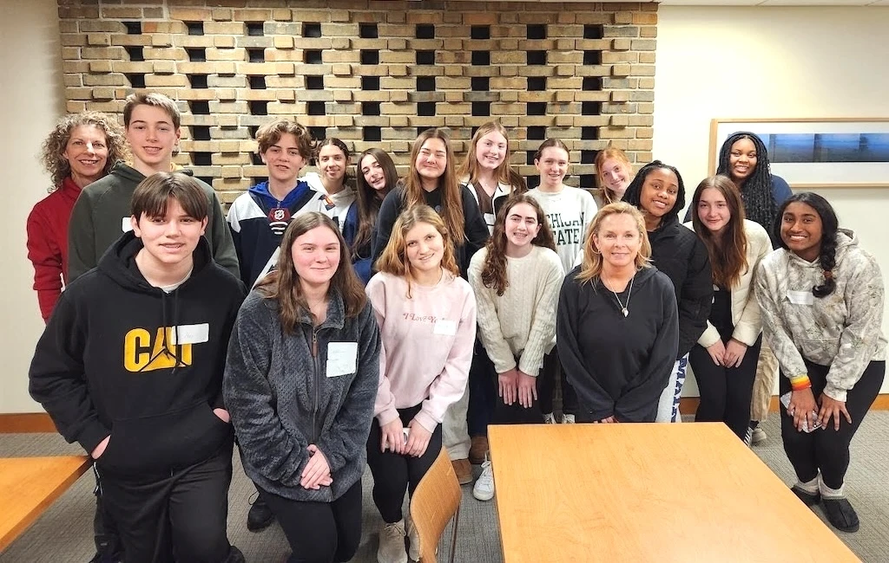

Community / Oakland Service Initiative
Care for the place
we call home.
Community service takes many forms. Each one starts with showing up.
2024 / BBCC partnership
Time given.
Community supported.
40 volunteer hours with Birmingham Bloomfield Community Coalition as part of our 4,000 total hours of service.
Explore our BBCC volunteering →Food assistance
A helping hand.
A shared meal.
Our volunteers have helped prepare or create 5,000+ meals through food-related service.
Explore food assistance →Environmental service
Good things grow
with care.
$3,000+ worth of plants planted, including a 500-plant project at Burgess-Shadbush Nature Center.
Explore environmental service →Rochester Heritage Festival
A seed.
A conversation.
Explore our planting activities and community connections at the Rochester Heritage Festival.
Read the festival story →
2024 / Community partnership
Volunteer partnership with BBCC
volunteer hours
OSI contributed 40 hours of volunteer service in 2024 through our partnership with Birmingham Bloomfield Community Coalition (BBCC). BBCC supports youth substance abuse prevention, health, and wellness in the Birmingham and Bloomfield communities.
Meet BBCC